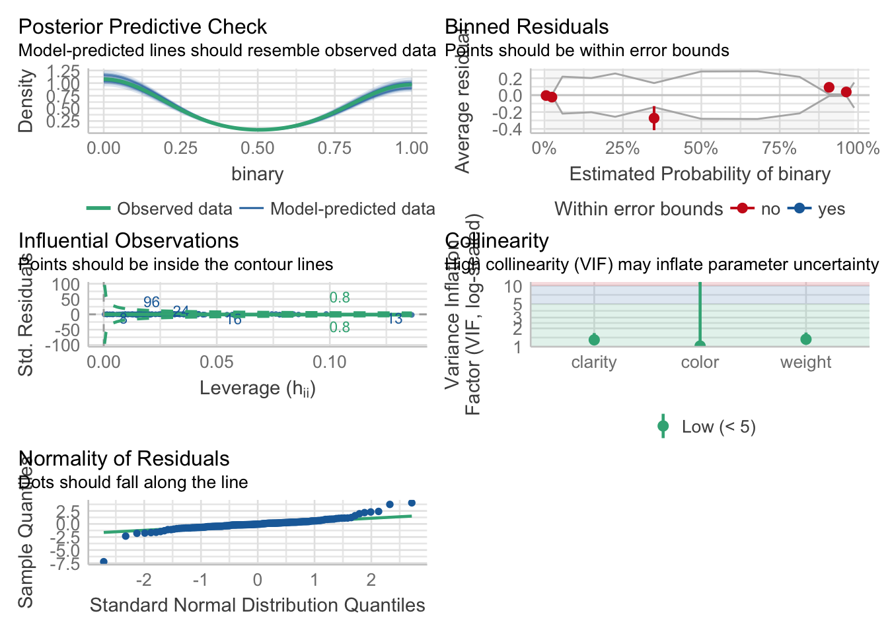
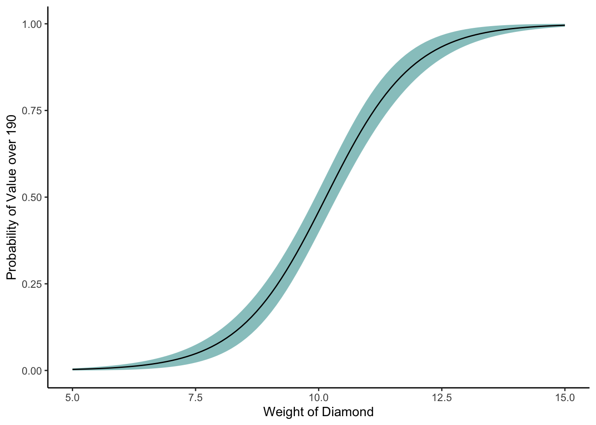
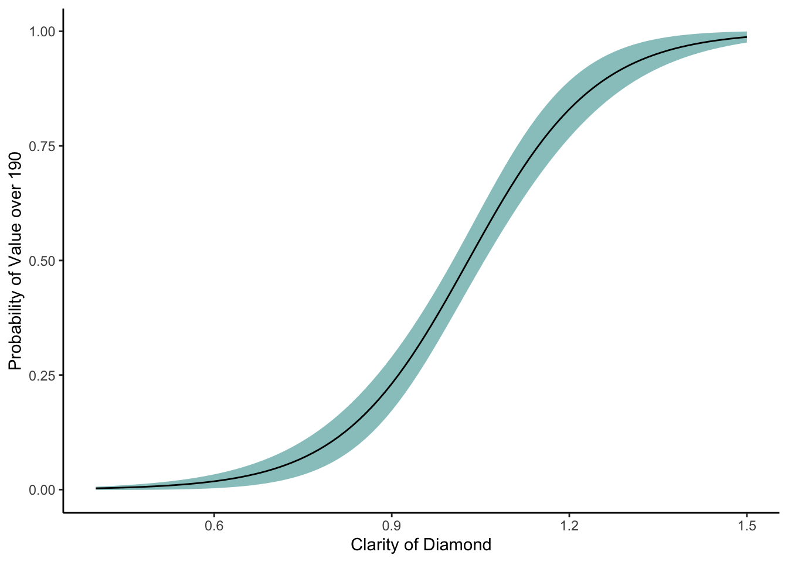
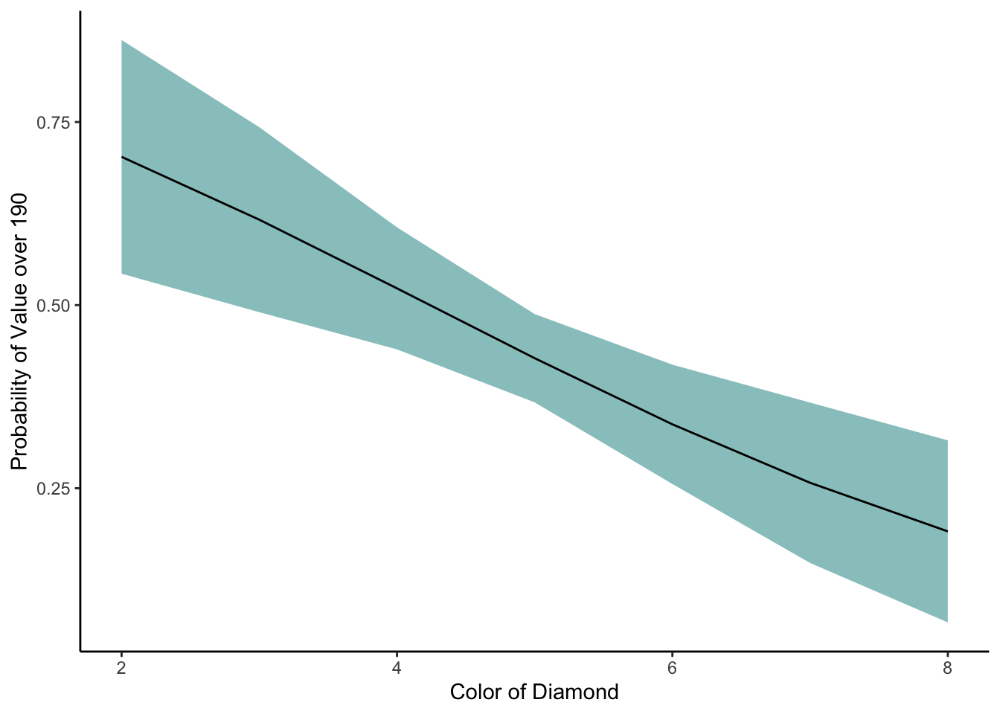
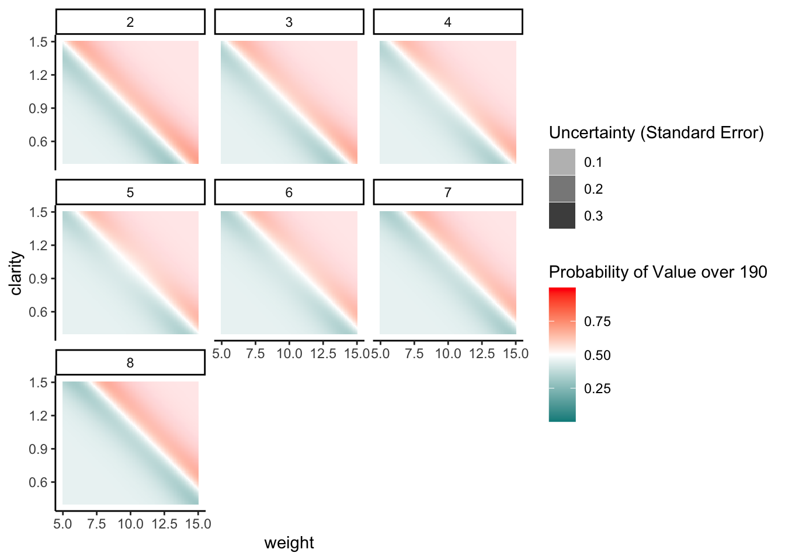
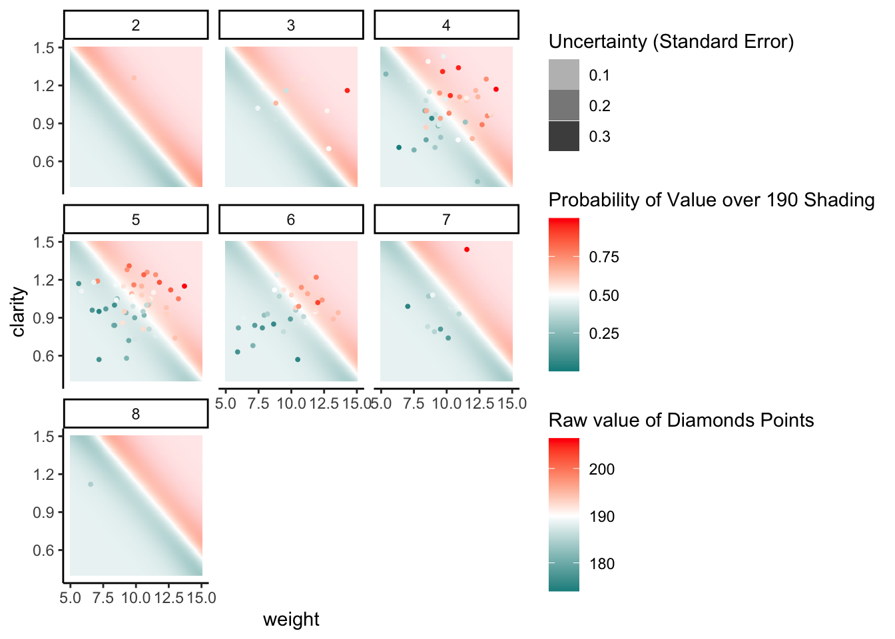

<!DOCTYPE html>
<html xmlns="http://www.w3.org/1999/xhtml" lang="en" xml:lang="en"><head>

<meta charset="utf-8">
<meta name="generator" content="quarto-1.2.269">

<meta name="viewport" content="width=device-width, initial-scale=1.0, user-scalable=yes">


<title>Binomial GLMs in R</title>
<style>
code{white-space: pre-wrap;}
span.smallcaps{font-variant: small-caps;}
div.columns{display: flex; gap: min(4vw, 1.5em);}
div.column{flex: auto; overflow-x: auto;}
div.hanging-indent{margin-left: 1.5em; text-indent: -1.5em;}
ul.task-list{list-style: none;}
ul.task-list li input[type="checkbox"] {
  width: 0.8em;
  margin: 0 0.8em 0.2em -1.6em;
  vertical-align: middle;
}
pre > code.sourceCode { white-space: pre; position: relative; }
pre > code.sourceCode > span { display: inline-block; line-height: 1.25; }
pre > code.sourceCode > span:empty { height: 1.2em; }
.sourceCode { overflow: visible; }
code.sourceCode > span { color: inherit; text-decoration: inherit; }
div.sourceCode { margin: 1em 0; }
pre.sourceCode { margin: 0; }
@media screen {
div.sourceCode { overflow: auto; }
}
@media print {
pre > code.sourceCode { white-space: pre-wrap; }
pre > code.sourceCode > span { text-indent: -5em; padding-left: 5em; }
}
pre.numberSource code
  { counter-reset: source-line 0; }
pre.numberSource code > span
  { position: relative; left: -4em; counter-increment: source-line; }
pre.numberSource code > span > a:first-child::before
  { content: counter(source-line);
    position: relative; left: -1em; text-align: right; vertical-align: baseline;
    border: none; display: inline-block;
    -webkit-touch-callout: none; -webkit-user-select: none;
    -khtml-user-select: none; -moz-user-select: none;
    -ms-user-select: none; user-select: none;
    padding: 0 4px; width: 4em;
    color: #aaaaaa;
  }
pre.numberSource { margin-left: 3em; border-left: 1px solid #aaaaaa;  padding-left: 4px; }
div.sourceCode
  {   }
@media screen {
pre > code.sourceCode > span > a:first-child::before { text-decoration: underline; }
}
code span.al { color: #ff0000; font-weight: bold; } /* Alert */
code span.an { color: #60a0b0; font-weight: bold; font-style: italic; } /* Annotation */
code span.at { color: #7d9029; } /* Attribute */
code span.bn { color: #40a070; } /* BaseN */
code span.bu { color: #008000; } /* BuiltIn */
code span.cf { color: #007020; font-weight: bold; } /* ControlFlow */
code span.ch { color: #4070a0; } /* Char */
code span.cn { color: #880000; } /* Constant */
code span.co { color: #60a0b0; font-style: italic; } /* Comment */
code span.cv { color: #60a0b0; font-weight: bold; font-style: italic; } /* CommentVar */
code span.do { color: #ba2121; font-style: italic; } /* Documentation */
code span.dt { color: #902000; } /* DataType */
code span.dv { color: #40a070; } /* DecVal */
code span.er { color: #ff0000; font-weight: bold; } /* Error */
code span.ex { } /* Extension */
code span.fl { color: #40a070; } /* Float */
code span.fu { color: #06287e; } /* Function */
code span.im { color: #008000; font-weight: bold; } /* Import */
code span.in { color: #60a0b0; font-weight: bold; font-style: italic; } /* Information */
code span.kw { color: #007020; font-weight: bold; } /* Keyword */
code span.op { color: #666666; } /* Operator */
code span.ot { color: #007020; } /* Other */
code span.pp { color: #bc7a00; } /* Preprocessor */
code span.sc { color: #4070a0; } /* SpecialChar */
code span.ss { color: #bb6688; } /* SpecialString */
code span.st { color: #4070a0; } /* String */
code span.va { color: #19177c; } /* Variable */
code span.vs { color: #4070a0; } /* VerbatimString */
code span.wa { color: #60a0b0; font-weight: bold; font-style: italic; } /* Warning */
</style>


<script src="BinomialGLMs_files/libs/clipboard/clipboard.min.js"></script>
<script src="BinomialGLMs_files/libs/quarto-html/quarto.js"></script>
<script src="BinomialGLMs_files/libs/quarto-html/popper.min.js"></script>
<script src="BinomialGLMs_files/libs/quarto-html/tippy.umd.min.js"></script>
<script src="BinomialGLMs_files/libs/quarto-html/anchor.min.js"></script>
<link href="BinomialGLMs_files/libs/quarto-html/tippy.css" rel="stylesheet">
<link href="BinomialGLMs_files/libs/quarto-html/quarto-syntax-highlighting.css" rel="stylesheet" id="quarto-text-highlighting-styles">
<script src="BinomialGLMs_files/libs/bootstrap/bootstrap.min.js"></script>
<link href="BinomialGLMs_files/libs/bootstrap/bootstrap-icons.css" rel="stylesheet">
<link href="BinomialGLMs_files/libs/bootstrap/bootstrap.min.css" rel="stylesheet" id="quarto-bootstrap" data-mode="light">


</head>

<body class="fullcontent">

<div id="quarto-content" class="page-columns page-rows-contents page-layout-article">

<main class="content" id="quarto-document-content">

<header id="title-block-header" class="quarto-title-block default">
<div class="quarto-title">
<h1 class="title">Binomial GLMs in R</h1>
</div>


<div class="quarto-title-meta">

    
  
    
  </div>
  

</header>

<p>Binomial variables are counts where there is a known upper limit The simplest example of which is binary situation 0 or 1, a coin flip, success or failure This type of model is called Bernoulli or Logistic regression in r it is a binomial() model.</p>
<div class="cell">
<div class="sourceCode cell-code" id="cb1"><pre class="sourceCode r code-with-copy"><code class="sourceCode r"><span id="cb1-1"><a href="#cb1-1" aria-hidden="true" tabindex="-1"></a><span class="fu">library</span>(performance)</span>
<span id="cb1-2"><a href="#cb1-2" aria-hidden="true" tabindex="-1"></a><span class="fu">library</span>(tidyverse)</span></code><button title="Copy to Clipboard" class="code-copy-button"><i class="bi"></i></button></pre></div>
<div class="cell-output cell-output-stderr">
<pre><code>── Attaching core tidyverse packages ──────────────────────── tidyverse 2.0.0 ──
✔ dplyr     1.1.0     ✔ readr     2.1.4
✔ forcats   1.0.0     ✔ stringr   1.5.0
✔ ggplot2   3.4.1     ✔ tibble    3.1.8
✔ lubridate 1.9.2     ✔ tidyr     1.3.0
✔ purrr     1.0.1     
── Conflicts ────────────────────────────────────────── tidyverse_conflicts() ──
✖ dplyr::filter() masks stats::filter()
✖ dplyr::lag()    masks stats::lag()
ℹ Use the ]8;;http://conflicted.r-lib.org/conflicted package]8;; to force all conflicts to become errors</code></pre>
</div>
<div class="sourceCode cell-code" id="cb3"><pre class="sourceCode r code-with-copy"><code class="sourceCode r"><span id="cb3-1"><a href="#cb3-1" aria-hidden="true" tabindex="-1"></a><span class="co">#install.packages("yarrr")</span></span>
<span id="cb3-2"><a href="#cb3-2" aria-hidden="true" tabindex="-1"></a><span class="fu">library</span>(yarrr)</span></code><button title="Copy to Clipboard" class="code-copy-button"><i class="bi"></i></button></pre></div>
<div class="cell-output cell-output-stderr">
<pre><code>Loading required package: jpeg
Loading required package: BayesFactor
Loading required package: coda
Loading required package: Matrix

Attaching package: 'Matrix'

The following objects are masked from 'package:tidyr':

    expand, pack, unpack

************
Welcome to BayesFactor 0.9.12-4.4. If you have questions, please contact Richard Morey (richarddmorey@gmail.com).

Type BFManual() to open the manual.
************
Loading required package: circlize
========================================
circlize version 0.4.15
CRAN page: https://cran.r-project.org/package=circlize
Github page: https://github.com/jokergoo/circlize
Documentation: https://jokergoo.github.io/circlize_book/book/

If you use it in published research, please cite:
Gu, Z. circlize implements and enhances circular visualization
  in R. Bioinformatics 2014.

This message can be suppressed by:
  suppressPackageStartupMessages(library(circlize))
========================================

yarrr v0.1.5. Citation info at citation('yarrr'). Package guide at yarrr.guide()
Email me at Nathaniel.D.Phillips.is@gmail.com

Attaching package: 'yarrr'

The following object is masked from 'package:ggplot2':

    diamonds</code></pre>
</div>
<div class="sourceCode cell-code" id="cb5"><pre class="sourceCode r code-with-copy"><code class="sourceCode r"><span id="cb5-1"><a href="#cb5-1" aria-hidden="true" tabindex="-1"></a><span class="fu">data</span>(diamonds)</span>
<span id="cb5-2"><a href="#cb5-2" aria-hidden="true" tabindex="-1"></a><span class="fu">summary</span>(diamonds)</span></code><button title="Copy to Clipboard" class="code-copy-button"><i class="bi"></i></button></pre></div>
<div class="cell-output cell-output-stdout">
<pre><code>     weight          clarity           color          value      
 Min.   : 5.360   Min.   :0.4400   Min.   :2.00   Min.   :174.0  
 1st Qu.: 8.598   1st Qu.:0.8900   1st Qu.:4.00   1st Qu.:184.0  
 Median : 9.805   Median :1.0000   Median :5.00   Median :189.6  
 Mean   : 9.901   Mean   :0.9996   Mean   :4.96   Mean   :189.4  
 3rd Qu.:11.155   3rd Qu.:1.1200   3rd Qu.:6.00   3rd Qu.:194.9  
 Max.   :14.270   Max.   :1.4400   Max.   :8.00   Max.   :206.4  </code></pre>
</div>
</div>
<p>We are gunna create a binomial factor to model diamond values when they are above 190</p>
<div class="cell">
<div class="sourceCode cell-code" id="cb7"><pre class="sourceCode r code-with-copy"><code class="sourceCode r"><span id="cb7-1"><a href="#cb7-1" aria-hidden="true" tabindex="-1"></a>diamonds<span class="sc">$</span>binary<span class="ot">&lt;-</span><span class="fu">ifelse</span>(diamonds<span class="sc">$</span>value<span class="sc">&gt;</span><span class="dv">190</span>,<span class="dv">1</span>,<span class="dv">0</span>)</span></code><button title="Copy to Clipboard" class="code-copy-button"><i class="bi"></i></button></pre></div>
</div>
<p>We will use all the values we have available to model value</p>
<div class="cell">
<div class="sourceCode cell-code" id="cb8"><pre class="sourceCode r code-with-copy"><code class="sourceCode r"><span id="cb8-1"><a href="#cb8-1" aria-hidden="true" tabindex="-1"></a>glm3<span class="fl">.1</span> <span class="ot">&lt;-</span> <span class="fu">glm</span>(binary <span class="sc">~</span> weight <span class="sc">+</span> clarity <span class="sc">+</span> color,</span>
<span id="cb8-2"><a href="#cb8-2" aria-hidden="true" tabindex="-1"></a>                   <span class="at">data =</span> diamonds,</span>
<span id="cb8-3"><a href="#cb8-3" aria-hidden="true" tabindex="-1"></a>                   <span class="at">family =</span> binomial)</span>
<span id="cb8-4"><a href="#cb8-4" aria-hidden="true" tabindex="-1"></a></span>
<span id="cb8-5"><a href="#cb8-5" aria-hidden="true" tabindex="-1"></a></span>
<span id="cb8-6"><a href="#cb8-6" aria-hidden="true" tabindex="-1"></a><span class="fu">check_model</span>(glm3<span class="fl">.1</span>)</span></code><button title="Copy to Clipboard" class="code-copy-button"><i class="bi"></i></button></pre></div>
<div class="cell-output cell-output-stderr">
<pre><code>Variable `Component` is not in your data frame :/</code></pre>
</div>
<div class="cell-output-display">
<p></p>
</div>
<div class="sourceCode cell-code" id="cb10"><pre class="sourceCode r code-with-copy"><code class="sourceCode r"><span id="cb10-1"><a href="#cb10-1" aria-hidden="true" tabindex="-1"></a><span class="fu">summary</span>(glm3<span class="fl">.1</span>)</span></code><button title="Copy to Clipboard" class="code-copy-button"><i class="bi"></i></button></pre></div>
<div class="cell-output cell-output-stdout">
<pre><code>
Call:
glm(formula = binary ~ weight + clarity + color, family = binomial, 
    data = diamonds)

Deviance Residuals: 
     Min        1Q    Median        3Q       Max  
-2.81502  -0.59412  -0.05014   0.45285   2.38291  

Coefficients:
            Estimate Std. Error z value Pr(&gt;|z|)    
(Intercept) -18.8009     3.4634  -5.428 5.69e-08 ***
weight        1.1251     0.1968   5.716 1.09e-08 ***
clarity       9.2910     1.9629   4.733 2.21e-06 ***
color        -0.3836     0.2481  -1.547    0.122    
---
Signif. codes:  0 '***' 0.001 '**' 0.01 '*' 0.05 '.' 0.1 ' ' 1

(Dispersion parameter for binomial family taken to be 1)

    Null deviance: 207.52  on 149  degrees of freedom
Residual deviance: 106.67  on 146  degrees of freedom
AIC: 114.67

Number of Fisher Scoring iterations: 6</code></pre>
</div>
</div>
<p>The model looks good, but lets plot the model outputs</p>
<p>First lets predict values assuming certain values are ’average</p>
<div class="cell">
<div class="sourceCode cell-code" id="cb12"><pre class="sourceCode r code-with-copy"><code class="sourceCode r"><span id="cb12-1"><a href="#cb12-1" aria-hidden="true" tabindex="-1"></a>NewData.weight<span class="ot">&lt;-</span><span class="fu">expand_grid</span>(<span class="at">weight=</span><span class="fu">seq</span>(<span class="dv">5</span>,<span class="dv">15</span>,<span class="at">length.out=</span><span class="dv">100</span>),</span>
<span id="cb12-2"><a href="#cb12-2" aria-hidden="true" tabindex="-1"></a>                     <span class="at">clarity=</span><span class="fu">mean</span>(diamonds<span class="sc">$</span>clarity),</span>
<span id="cb12-3"><a href="#cb12-3" aria-hidden="true" tabindex="-1"></a>                     <span class="at">color=</span><span class="fu">mean</span>(diamonds<span class="sc">$</span>color))</span>
<span id="cb12-4"><a href="#cb12-4" aria-hidden="true" tabindex="-1"></a></span>
<span id="cb12-5"><a href="#cb12-5" aria-hidden="true" tabindex="-1"></a>Pred<span class="ot">&lt;-</span><span class="fu">predict</span>(glm3<span class="fl">.1</span>,NewData.weight,<span class="at">se.fit=</span><span class="cn">TRUE</span>,<span class="st">"response"</span>)</span>
<span id="cb12-6"><a href="#cb12-6" aria-hidden="true" tabindex="-1"></a></span>
<span id="cb12-7"><a href="#cb12-7" aria-hidden="true" tabindex="-1"></a>NewData.weight<span class="sc">$</span>response<span class="ot">&lt;-</span>Pred<span class="sc">$</span>fit</span>
<span id="cb12-8"><a href="#cb12-8" aria-hidden="true" tabindex="-1"></a></span>
<span id="cb12-9"><a href="#cb12-9" aria-hidden="true" tabindex="-1"></a>NewData.weight<span class="sc">$</span>se.fit<span class="ot">&lt;-</span>Pred<span class="sc">$</span>se.fit</span>
<span id="cb12-10"><a href="#cb12-10" aria-hidden="true" tabindex="-1"></a></span>
<span id="cb12-11"><a href="#cb12-11" aria-hidden="true" tabindex="-1"></a></span>
<span id="cb12-12"><a href="#cb12-12" aria-hidden="true" tabindex="-1"></a></span>
<span id="cb12-13"><a href="#cb12-13" aria-hidden="true" tabindex="-1"></a><span class="fu">ggplot</span>(NewData.weight)<span class="sc">+</span></span>
<span id="cb12-14"><a href="#cb12-14" aria-hidden="true" tabindex="-1"></a>  <span class="fu">geom_ribbon</span>(<span class="fu">aes</span>(<span class="at">x=</span>weight,<span class="at">ymax=</span>response<span class="sc">+</span>se.fit,</span>
<span id="cb12-15"><a href="#cb12-15" aria-hidden="true" tabindex="-1"></a>                  <span class="at">ymin=</span>response<span class="sc">-</span>se.fit),</span>
<span id="cb12-16"><a href="#cb12-16" aria-hidden="true" tabindex="-1"></a>              <span class="at">alpha=</span><span class="fl">0.5</span>,<span class="at">fill=</span><span class="st">"darkcyan"</span>)<span class="sc">+</span></span>
<span id="cb12-17"><a href="#cb12-17" aria-hidden="true" tabindex="-1"></a>  <span class="fu">geom_line</span>(<span class="fu">aes</span>(<span class="at">x=</span>weight,<span class="at">y=</span>response))<span class="sc">+</span></span>
<span id="cb12-18"><a href="#cb12-18" aria-hidden="true" tabindex="-1"></a>  <span class="fu">theme_classic</span>()<span class="sc">+</span></span>
<span id="cb12-19"><a href="#cb12-19" aria-hidden="true" tabindex="-1"></a>  <span class="fu">labs</span>(<span class="at">y=</span><span class="st">"Probability of Value over 190"</span>,</span>
<span id="cb12-20"><a href="#cb12-20" aria-hidden="true" tabindex="-1"></a>       <span class="at">x=</span><span class="st">"Weight of Diamond"</span>)</span></code><button title="Copy to Clipboard" class="code-copy-button"><i class="bi"></i></button></pre></div>
<div class="cell-output-display">
<p></p>
</div>
</div>
<p>Lets try with different clarities but average weight and color</p>
<div class="cell">
<div class="sourceCode cell-code" id="cb13"><pre class="sourceCode r code-with-copy"><code class="sourceCode r"><span id="cb13-1"><a href="#cb13-1" aria-hidden="true" tabindex="-1"></a>NewData.clarity<span class="ot">&lt;-</span><span class="fu">expand_grid</span>(<span class="at">weight=</span><span class="fu">mean</span>(diamonds<span class="sc">$</span>weight),</span>
<span id="cb13-2"><a href="#cb13-2" aria-hidden="true" tabindex="-1"></a>                            <span class="at">clarity=</span><span class="fu">seq</span>(<span class="fl">0.4</span>,<span class="fl">1.5</span>,<span class="at">length.out=</span><span class="dv">100</span>),</span>
<span id="cb13-3"><a href="#cb13-3" aria-hidden="true" tabindex="-1"></a>                            <span class="at">color=</span><span class="fu">mean</span>(diamonds<span class="sc">$</span>color))</span>
<span id="cb13-4"><a href="#cb13-4" aria-hidden="true" tabindex="-1"></a></span>
<span id="cb13-5"><a href="#cb13-5" aria-hidden="true" tabindex="-1"></a>Pred<span class="ot">&lt;-</span><span class="fu">predict</span>(glm3<span class="fl">.1</span>,NewData.clarity,<span class="at">se.fit=</span><span class="cn">TRUE</span>,<span class="st">"response"</span>)</span>
<span id="cb13-6"><a href="#cb13-6" aria-hidden="true" tabindex="-1"></a></span>
<span id="cb13-7"><a href="#cb13-7" aria-hidden="true" tabindex="-1"></a>NewData.clarity<span class="sc">$</span>response<span class="ot">&lt;-</span>Pred<span class="sc">$</span>fit</span>
<span id="cb13-8"><a href="#cb13-8" aria-hidden="true" tabindex="-1"></a></span>
<span id="cb13-9"><a href="#cb13-9" aria-hidden="true" tabindex="-1"></a>NewData.clarity<span class="sc">$</span>se.fit<span class="ot">&lt;-</span>Pred<span class="sc">$</span>se.fit</span>
<span id="cb13-10"><a href="#cb13-10" aria-hidden="true" tabindex="-1"></a></span>
<span id="cb13-11"><a href="#cb13-11" aria-hidden="true" tabindex="-1"></a></span>
<span id="cb13-12"><a href="#cb13-12" aria-hidden="true" tabindex="-1"></a></span>
<span id="cb13-13"><a href="#cb13-13" aria-hidden="true" tabindex="-1"></a><span class="fu">ggplot</span>(NewData.clarity)<span class="sc">+</span></span>
<span id="cb13-14"><a href="#cb13-14" aria-hidden="true" tabindex="-1"></a>  <span class="fu">geom_ribbon</span>(<span class="fu">aes</span>(<span class="at">x=</span>clarity,<span class="at">ymax=</span>response<span class="sc">+</span>se.fit,</span>
<span id="cb13-15"><a href="#cb13-15" aria-hidden="true" tabindex="-1"></a>                  <span class="at">ymin=</span>response<span class="sc">-</span>se.fit),</span>
<span id="cb13-16"><a href="#cb13-16" aria-hidden="true" tabindex="-1"></a>              <span class="at">alpha=</span><span class="fl">0.5</span>,<span class="at">fill=</span><span class="st">"darkcyan"</span>)<span class="sc">+</span></span>
<span id="cb13-17"><a href="#cb13-17" aria-hidden="true" tabindex="-1"></a>  <span class="fu">geom_line</span>(<span class="fu">aes</span>(<span class="at">x=</span>clarity,<span class="at">y=</span>response))<span class="sc">+</span></span>
<span id="cb13-18"><a href="#cb13-18" aria-hidden="true" tabindex="-1"></a>  <span class="fu">theme_classic</span>()<span class="sc">+</span></span>
<span id="cb13-19"><a href="#cb13-19" aria-hidden="true" tabindex="-1"></a>  <span class="fu">labs</span>(<span class="at">y=</span><span class="st">"Probability of Value over 190"</span>,</span>
<span id="cb13-20"><a href="#cb13-20" aria-hidden="true" tabindex="-1"></a>       <span class="at">x=</span><span class="st">"Clarity of Diamond"</span>)</span></code><button title="Copy to Clipboard" class="code-copy-button"><i class="bi"></i></button></pre></div>
<div class="cell-output-display">
<p></p>
</div>
</div>
<p>Finally lets look at colour, given average weight and clarity</p>
<div class="cell">
<div class="sourceCode cell-code" id="cb14"><pre class="sourceCode r code-with-copy"><code class="sourceCode r"><span id="cb14-1"><a href="#cb14-1" aria-hidden="true" tabindex="-1"></a>NewData.color<span class="ot">&lt;-</span><span class="fu">expand_grid</span>(<span class="at">weight=</span><span class="fu">mean</span>(diamonds<span class="sc">$</span>weight),</span>
<span id="cb14-2"><a href="#cb14-2" aria-hidden="true" tabindex="-1"></a>                            <span class="at">clarity=</span><span class="fu">mean</span>(diamonds<span class="sc">$</span>clarity),</span>
<span id="cb14-3"><a href="#cb14-3" aria-hidden="true" tabindex="-1"></a>                            <span class="at">color=</span><span class="fu">seq</span>(<span class="dv">2</span>,<span class="dv">8</span>,<span class="at">by=</span><span class="dv">1</span>))</span>
<span id="cb14-4"><a href="#cb14-4" aria-hidden="true" tabindex="-1"></a></span>
<span id="cb14-5"><a href="#cb14-5" aria-hidden="true" tabindex="-1"></a>Pred<span class="ot">&lt;-</span><span class="fu">predict</span>(glm3<span class="fl">.1</span>,NewData.color,<span class="at">se.fit=</span><span class="cn">TRUE</span>,<span class="st">"response"</span>)</span>
<span id="cb14-6"><a href="#cb14-6" aria-hidden="true" tabindex="-1"></a></span>
<span id="cb14-7"><a href="#cb14-7" aria-hidden="true" tabindex="-1"></a>NewData.color<span class="sc">$</span>response<span class="ot">&lt;-</span>Pred<span class="sc">$</span>fit</span>
<span id="cb14-8"><a href="#cb14-8" aria-hidden="true" tabindex="-1"></a></span>
<span id="cb14-9"><a href="#cb14-9" aria-hidden="true" tabindex="-1"></a>NewData.color<span class="sc">$</span>se.fit<span class="ot">&lt;-</span>Pred<span class="sc">$</span>se.fit</span>
<span id="cb14-10"><a href="#cb14-10" aria-hidden="true" tabindex="-1"></a></span>
<span id="cb14-11"><a href="#cb14-11" aria-hidden="true" tabindex="-1"></a></span>
<span id="cb14-12"><a href="#cb14-12" aria-hidden="true" tabindex="-1"></a><span class="fu">ggplot</span>(NewData.color)<span class="sc">+</span></span>
<span id="cb14-13"><a href="#cb14-13" aria-hidden="true" tabindex="-1"></a>  <span class="fu">geom_ribbon</span>(<span class="fu">aes</span>(<span class="at">x=</span>color,<span class="at">ymax=</span>response<span class="sc">+</span>se.fit,</span>
<span id="cb14-14"><a href="#cb14-14" aria-hidden="true" tabindex="-1"></a>                  <span class="at">ymin=</span>response<span class="sc">-</span>se.fit),</span>
<span id="cb14-15"><a href="#cb14-15" aria-hidden="true" tabindex="-1"></a>              <span class="at">alpha=</span><span class="fl">0.5</span>,<span class="at">fill=</span><span class="st">"darkcyan"</span>)<span class="sc">+</span></span>
<span id="cb14-16"><a href="#cb14-16" aria-hidden="true" tabindex="-1"></a>  <span class="fu">geom_line</span>(<span class="fu">aes</span>(<span class="at">x=</span>color,<span class="at">y=</span>response))<span class="sc">+</span></span>
<span id="cb14-17"><a href="#cb14-17" aria-hidden="true" tabindex="-1"></a>  <span class="fu">theme_classic</span>()<span class="sc">+</span></span>
<span id="cb14-18"><a href="#cb14-18" aria-hidden="true" tabindex="-1"></a>  <span class="fu">labs</span>(<span class="at">y=</span><span class="st">"Probability of Value over 190"</span>,</span>
<span id="cb14-19"><a href="#cb14-19" aria-hidden="true" tabindex="-1"></a>       <span class="at">x=</span><span class="st">"Color of Diamond"</span>)</span></code><button title="Copy to Clipboard" class="code-copy-button"><i class="bi"></i></button></pre></div>
<div class="cell-output-display">
<p></p>
</div>
</div>
<p>Lets plot all our factors in one plot</p>
<div class="cell">
<div class="sourceCode cell-code" id="cb15"><pre class="sourceCode r code-with-copy"><code class="sourceCode r"><span id="cb15-1"><a href="#cb15-1" aria-hidden="true" tabindex="-1"></a>NewData<span class="ot">&lt;-</span><span class="fu">expand_grid</span>(<span class="at">weight=</span><span class="fu">seq</span>(<span class="dv">5</span>,<span class="dv">15</span>,<span class="at">length.out=</span><span class="dv">100</span>),</span>
<span id="cb15-2"><a href="#cb15-2" aria-hidden="true" tabindex="-1"></a>                           <span class="at">clarity=</span><span class="fu">seq</span>(<span class="fl">0.4</span>,<span class="fl">1.5</span>,<span class="at">length.out=</span><span class="dv">100</span>),</span>
<span id="cb15-3"><a href="#cb15-3" aria-hidden="true" tabindex="-1"></a>                           <span class="at">color=</span><span class="fu">seq</span>(<span class="dv">2</span>,<span class="dv">8</span>,<span class="at">by=</span><span class="dv">1</span>))</span>
<span id="cb15-4"><a href="#cb15-4" aria-hidden="true" tabindex="-1"></a></span>
<span id="cb15-5"><a href="#cb15-5" aria-hidden="true" tabindex="-1"></a>Pred<span class="ot">&lt;-</span><span class="fu">predict</span>(glm3<span class="fl">.1</span>,NewData,<span class="at">se.fit=</span><span class="cn">TRUE</span>,<span class="st">"response"</span>)</span>
<span id="cb15-6"><a href="#cb15-6" aria-hidden="true" tabindex="-1"></a></span>
<span id="cb15-7"><a href="#cb15-7" aria-hidden="true" tabindex="-1"></a>NewData<span class="sc">$</span>response<span class="ot">&lt;-</span>Pred<span class="sc">$</span>fit</span>
<span id="cb15-8"><a href="#cb15-8" aria-hidden="true" tabindex="-1"></a></span>
<span id="cb15-9"><a href="#cb15-9" aria-hidden="true" tabindex="-1"></a>NewData<span class="sc">$</span>se.fit<span class="ot">&lt;-</span>Pred<span class="sc">$</span>se.fit</span>
<span id="cb15-10"><a href="#cb15-10" aria-hidden="true" tabindex="-1"></a></span>
<span id="cb15-11"><a href="#cb15-11" aria-hidden="true" tabindex="-1"></a><span class="fu">ggplot</span>(NewData)<span class="sc">+</span></span>
<span id="cb15-12"><a href="#cb15-12" aria-hidden="true" tabindex="-1"></a>  <span class="fu">geom_tile</span>(<span class="fu">aes</span>(<span class="at">x=</span>weight,<span class="at">y=</span>clarity,</span>
<span id="cb15-13"><a href="#cb15-13" aria-hidden="true" tabindex="-1"></a>                <span class="at">fill=</span>response,</span>
<span id="cb15-14"><a href="#cb15-14" aria-hidden="true" tabindex="-1"></a>                <span class="at">alpha=</span>se.fit))<span class="sc">+</span></span>
<span id="cb15-15"><a href="#cb15-15" aria-hidden="true" tabindex="-1"></a>  <span class="fu">scale_fill_gradient2</span>(<span class="at">low=</span><span class="st">"darkcyan"</span>,<span class="at">mid=</span><span class="st">"white"</span>,<span class="at">high=</span><span class="st">"red"</span>,<span class="at">midpoint=</span><span class="fl">0.5</span>)<span class="sc">+</span></span>
<span id="cb15-16"><a href="#cb15-16" aria-hidden="true" tabindex="-1"></a>  <span class="fu">facet_wrap</span>(<span class="sc">~</span>color)<span class="sc">+</span></span>
<span id="cb15-17"><a href="#cb15-17" aria-hidden="true" tabindex="-1"></a>  <span class="fu">theme_classic</span>()<span class="sc">+</span></span>
<span id="cb15-18"><a href="#cb15-18" aria-hidden="true" tabindex="-1"></a>  <span class="fu">labs</span>(<span class="at">fill=</span><span class="st">"Probability of Value over 190"</span>,</span>
<span id="cb15-19"><a href="#cb15-19" aria-hidden="true" tabindex="-1"></a>       <span class="at">alpha=</span><span class="st">"Uncertainty (Standard Error)"</span>)</span></code><button title="Copy to Clipboard" class="code-copy-button"><i class="bi"></i></button></pre></div>
<div class="cell-output-display">
<p></p>
</div>
</div>
<p>Lets add our raw data to the plot</p>
<div class="cell">
<div class="sourceCode cell-code" id="cb16"><pre class="sourceCode r code-with-copy"><code class="sourceCode r"><span id="cb16-1"><a href="#cb16-1" aria-hidden="true" tabindex="-1"></a><span class="fu">ggplot</span>(NewData)<span class="sc">+</span></span>
<span id="cb16-2"><a href="#cb16-2" aria-hidden="true" tabindex="-1"></a>  <span class="fu">geom_tile</span>(<span class="fu">aes</span>(<span class="at">x=</span>weight,<span class="at">y=</span>clarity,</span>
<span id="cb16-3"><a href="#cb16-3" aria-hidden="true" tabindex="-1"></a>                <span class="at">fill=</span>response,</span>
<span id="cb16-4"><a href="#cb16-4" aria-hidden="true" tabindex="-1"></a>                <span class="at">alpha=</span>se.fit))<span class="sc">+</span></span>
<span id="cb16-5"><a href="#cb16-5" aria-hidden="true" tabindex="-1"></a>  <span class="fu">scale_fill_gradient2</span>(<span class="at">low=</span><span class="st">"darkcyan"</span>,<span class="at">mid=</span><span class="st">"white"</span>,<span class="at">high=</span><span class="st">"red"</span>,<span class="at">midpoint=</span><span class="fl">0.5</span>)<span class="sc">+</span></span>
<span id="cb16-6"><a href="#cb16-6" aria-hidden="true" tabindex="-1"></a>  <span class="fu">geom_point</span>(<span class="at">data =</span> diamonds,<span class="at">mapping=</span><span class="fu">aes</span>(<span class="at">x=</span>weight,<span class="at">y=</span>clarity,<span class="at">colour=</span>value),<span class="at">size=</span><span class="fl">0.7</span>)<span class="sc">+</span></span>
<span id="cb16-7"><a href="#cb16-7" aria-hidden="true" tabindex="-1"></a>  <span class="fu">scale_colour_gradient2</span>(<span class="at">low=</span><span class="st">"darkcyan"</span>,<span class="at">mid=</span><span class="st">"white"</span>,<span class="at">high=</span><span class="st">"red"</span>,<span class="at">midpoint=</span><span class="dv">190</span>)<span class="sc">+</span></span>
<span id="cb16-8"><a href="#cb16-8" aria-hidden="true" tabindex="-1"></a>  <span class="fu">facet_wrap</span>(<span class="sc">~</span>color)<span class="sc">+</span></span>
<span id="cb16-9"><a href="#cb16-9" aria-hidden="true" tabindex="-1"></a>  <span class="fu">theme_classic</span>()<span class="sc">+</span></span>
<span id="cb16-10"><a href="#cb16-10" aria-hidden="true" tabindex="-1"></a>  <span class="fu">labs</span>(<span class="at">fill=</span><span class="st">"Probability of Value over 190 Shading"</span>,</span>
<span id="cb16-11"><a href="#cb16-11" aria-hidden="true" tabindex="-1"></a>       <span class="at">colour=</span><span class="st">"Raw value of Diamonds Points"</span>,</span>
<span id="cb16-12"><a href="#cb16-12" aria-hidden="true" tabindex="-1"></a>       <span class="at">alpha=</span><span class="st">"Uncertainty (Standard Error)"</span>)</span></code><button title="Copy to Clipboard" class="code-copy-button"><i class="bi"></i></button></pre></div>
<div class="cell-output-display">
<p></p>
</div>
</div>

</main>
<!-- /main column -->
<script id="quarto-html-after-body" type="application/javascript">
window.document.addEventListener("DOMContentLoaded", function (event) {
  const toggleBodyColorMode = (bsSheetEl) => {
    const mode = bsSheetEl.getAttribute("data-mode");
    const bodyEl = window.document.querySelector("body");
    if (mode === "dark") {
      bodyEl.classList.add("quarto-dark");
      bodyEl.classList.remove("quarto-light");
    } else {
      bodyEl.classList.add("quarto-light");
      bodyEl.classList.remove("quarto-dark");
    }
  }
  const toggleBodyColorPrimary = () => {
    const bsSheetEl = window.document.querySelector("link#quarto-bootstrap");
    if (bsSheetEl) {
      toggleBodyColorMode(bsSheetEl);
    }
  }
  toggleBodyColorPrimary();  
  const icon = "";
  const anchorJS = new window.AnchorJS();
  anchorJS.options = {
    placement: 'right',
    icon: icon
  };
  anchorJS.add('.anchored');
  const clipboard = new window.ClipboardJS('.code-copy-button', {
    target: function(trigger) {
      return trigger.previousElementSibling;
    }
  });
  clipboard.on('success', function(e) {
    // button target
    const button = e.trigger;
    // don't keep focus
    button.blur();
    // flash "checked"
    button.classList.add('code-copy-button-checked');
    var currentTitle = button.getAttribute("title");
    button.setAttribute("title", "Copied!");
    let tooltip;
    if (window.bootstrap) {
      button.setAttribute("data-bs-toggle", "tooltip");
      button.setAttribute("data-bs-placement", "left");
      button.setAttribute("data-bs-title", "Copied!");
      tooltip = new bootstrap.Tooltip(button, 
        { trigger: "manual", 
          customClass: "code-copy-button-tooltip",
          offset: [0, -8]});
      tooltip.show();    
    }
    setTimeout(function() {
      if (tooltip) {
        tooltip.hide();
        button.removeAttribute("data-bs-title");
        button.removeAttribute("data-bs-toggle");
        button.removeAttribute("data-bs-placement");
      }
      button.setAttribute("title", currentTitle);
      button.classList.remove('code-copy-button-checked');
    }, 1000);
    // clear code selection
    e.clearSelection();
  });
  function tippyHover(el, contentFn) {
    const config = {
      allowHTML: true,
      content: contentFn,
      maxWidth: 500,
      delay: 100,
      arrow: false,
      appendTo: function(el) {
          return el.parentElement;
      },
      interactive: true,
      interactiveBorder: 10,
      theme: 'quarto',
      placement: 'bottom-start'
    };
    window.tippy(el, config); 
  }
  const noterefs = window.document.querySelectorAll('a[role="doc-noteref"]');
  for (var i=0; i<noterefs.length; i++) {
    const ref = noterefs[i];
    tippyHover(ref, function() {
      // use id or data attribute instead here
      let href = ref.getAttribute('data-footnote-href') || ref.getAttribute('href');
      try { href = new URL(href).hash; } catch {}
      const id = href.replace(/^#\/?/, "");
      const note = window.document.getElementById(id);
      return note.innerHTML;
    });
  }
  const findCites = (el) => {
    const parentEl = el.parentElement;
    if (parentEl) {
      const cites = parentEl.dataset.cites;
      if (cites) {
        return {
          el,
          cites: cites.split(' ')
        };
      } else {
        return findCites(el.parentElement)
      }
    } else {
      return undefined;
    }
  };
  var bibliorefs = window.document.querySelectorAll('a[role="doc-biblioref"]');
  for (var i=0; i<bibliorefs.length; i++) {
    const ref = bibliorefs[i];
    const citeInfo = findCites(ref);
    if (citeInfo) {
      tippyHover(citeInfo.el, function() {
        var popup = window.document.createElement('div');
        citeInfo.cites.forEach(function(cite) {
          var citeDiv = window.document.createElement('div');
          citeDiv.classList.add('hanging-indent');
          citeDiv.classList.add('csl-entry');
          var biblioDiv = window.document.getElementById('ref-' + cite);
          if (biblioDiv) {
            citeDiv.innerHTML = biblioDiv.innerHTML;
          }
          popup.appendChild(citeDiv);
        });
        return popup.innerHTML;
      });
    }
  }
});
</script>
</div> <!-- /content -->


</body></html>